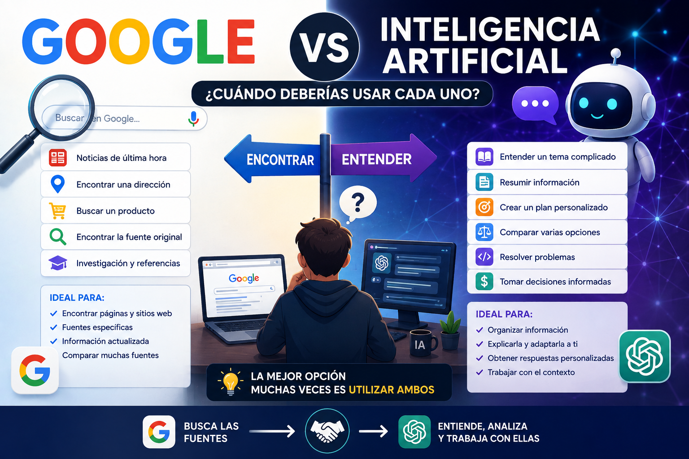
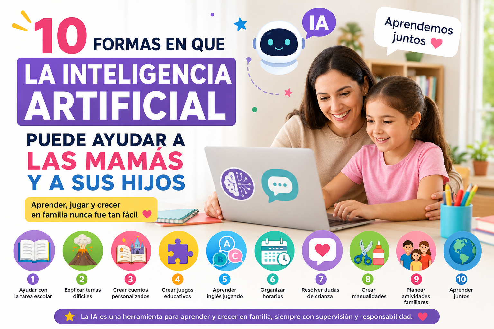
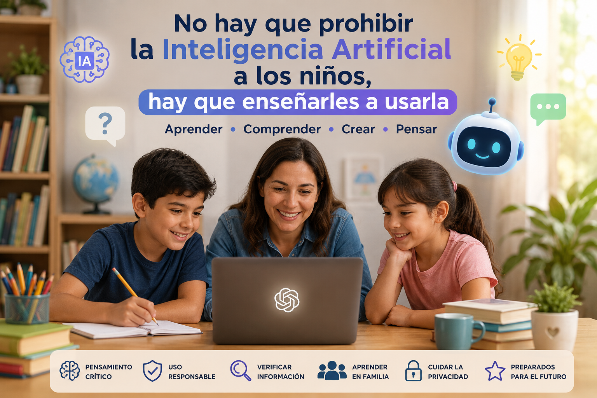
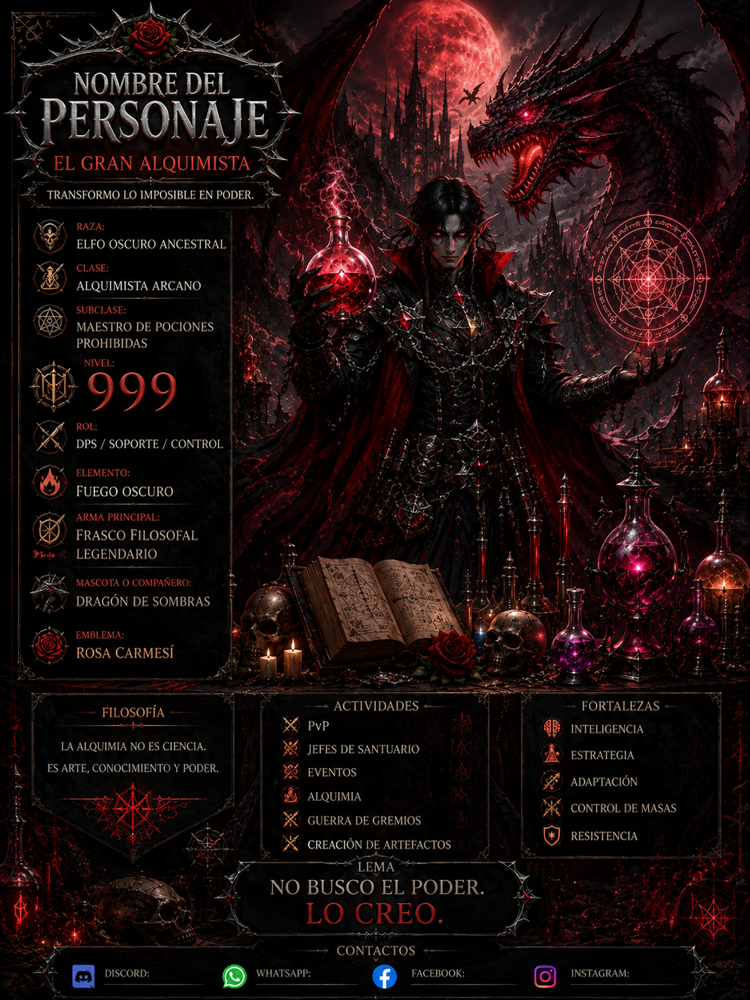
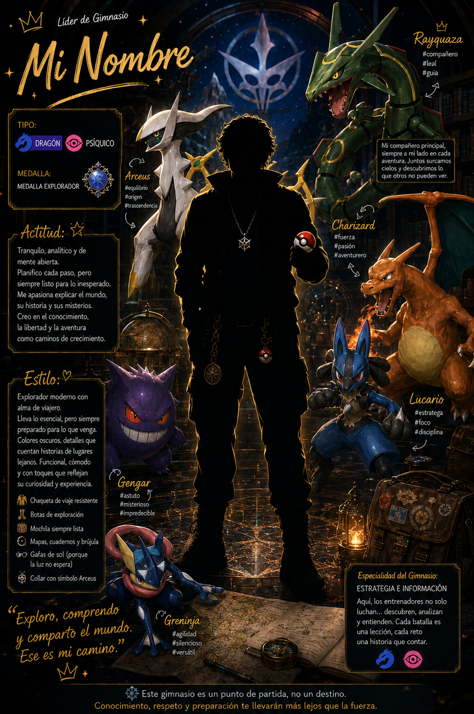
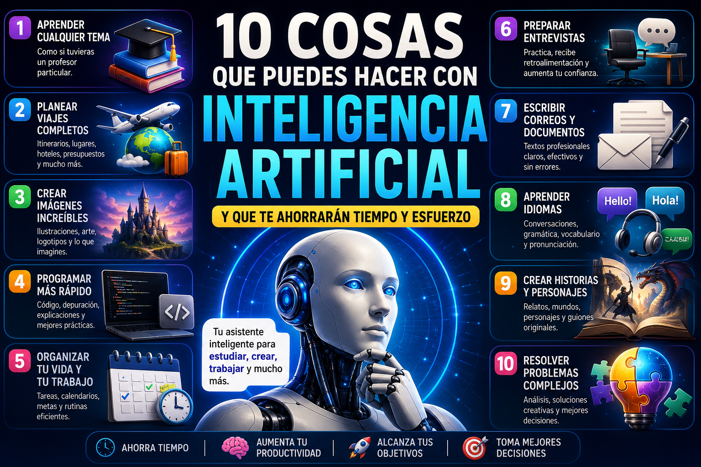

Aprende Inteligencia Artificial de forma sencilla
Guías paso a paso, ejemplos prácticos y consejos para aprovechar la IA en tu vida diaria.
Descubre cómo utilizar la Inteligencia Artificial para estudiar, trabajar, ahorrar dinero, crear imágenes, programar y resolver problemas cotidianos, incluso si nunca antes has utilizado una herramienta de IA.
✨ ¿Por qué visitar este blog?
Guías paso a paso
Aprende Inteligencia Artificial desde cero con explicaciones sencillas y fáciles de seguir.
Ejemplos prácticos
Descubre ejemplos reales de preguntas que puedes hacerle a la IA para obtener mejores resultados.
IA para todos
Contenido pensado para estudiantes, familias, trabajadores, adultos mayores, emprendedores y cualquier persona que quiera aprender.
Herramientas recomendadas
Conoce las mejores herramientas de Inteligencia Artificial para estudiar, trabajar, crear imágenes y aumentar tu productividad.
🤖 Síguenos en Facebook
¿Quieres descubrir nuevos consejos, prompts, herramientas y novedades sobre Inteligencia Artificial?
Sigue nuestra página de Facebook y acompáñanos en este proyecto.
👍 Seguir en Facebook📚 Explora por categoría
📝 Últimos artículos
💰 10 formas en que la Inteligencia Artificial puede ayudarte a ahorrar dinero
Aprende a comparar precios, organizar presupuestos, evitar compras impulsivas y planificar mejor tus finanzas utilizando IA.
📖 Leer artículo →
🔎 Google vs. Inteligencia Artificial: ¿cuándo deberías usar cada uno?
Descubre cuándo conviene utilizar Google y cuándo una Inteligencia Artificial para encontrar, entender, comparar y analizar información de forma más eficiente.
📖 Leer artículo →
👩👧👦 10 formas en que la IA puede ayudar a las mamás y a sus hijos
Descubre cómo la IA puede ayudar con tareas escolares, cuentos, organización y aprendizaje en familia.
📖 Leer artículo →👴 Cómo usar la Inteligencia Artificial para adultos mayores
Aprende cómo la IA puede facilitar la vida diaria, resolver dudas y ayudar a aprender cosas nuevas.
📖 Leer artículo →🎨 Cómo crear imágenes profesionales con IA aunque no sepas diseñar
Aprende a crear imágenes profesionales con Inteligencia Artificial utilizando mejores prompts, estilos, iluminación, composición y formatos, aunque no tengas conocimientos de diseño.
📖 Leer artículo →
👨👩👧👦 No hay que prohibir la Inteligencia Artificial a los niños, hay que enseñarles a usarla
Descubre por qué la IA no debe prohibirse a los niños y cómo padres y maestros pueden enseñarles a utilizarla de forma responsable, segura y como una herramienta para aprender.
📖 Leer artículo →🏅 10 formas en que la IA puede ayudar a los aficionados al deporte
Analiza partidos, compara jugadores, entiende estadísticas y crea contenido deportivo con Inteligencia Artificial.
📖 Leer artículo →🏆 10 formas en que la IA puede ayudar a los entrenadores deportivos
Descubre cómo la Inteligencia Artificial puede ayudar a los entrenadores a crear planes de entrenamiento, analizar estadísticas, preparar estrategias, personalizar ejercicios y organizar mejor sus equipos.
📖 Leer artículo →
🌆 Cómo crear tu personaje Cyberpunk con IA
Diseña personajes futuristas con historia, habilidades, implantes y un póster espectacular.
📖 Leer artículo →
🎨 Cómo crear personajes con Inteligencia Artificial
Aprende a crear personajes originales para juegos, historias, rol o ilustraciones utilizando IA.
📖 Leer artículo →
⚡ Crea tu líder de gimnasio Pokémon con IA
Diseña un entrenador Pokémon con historia, equipo, insignia y estilo propio utilizando Inteligencia Artificial.
📖 Leer artículo →🤖 Las mejores Inteligencias Artificiales de 2026
Descubre cuáles son las mejores herramientas de IA según tus necesidades y profesión.
📖 Leer artículo →❌ 10 errores que cometen los principiantes al usar IA
Evita los errores más comunes al comenzar a utilizar herramientas de Inteligencia Artificial.
📖 Leer artículo →
✨ 10 cosas sorprendentes que puedes hacer con la IA
Descubre usos poco conocidos de la Inteligencia Artificial que pueden ayudarte en tu vida diaria.
📖 Leer artículo →🚀 Empieza a aprovechar la Inteligencia Artificial hoy mismo
La Inteligencia Artificial ya forma parte del trabajo, la educación, los negocios y la vida cotidiana. Aprender a utilizarla correctamente puede ayudarte a ahorrar tiempo, mejorar tus habilidades y resolver tareas de una forma más rápida y sencilla.
En Cómo Hablar con la IA publicamos nuevos artículos con frecuencia para enseñarte, paso a paso, cómo sacar el máximo provecho de esta tecnología, sin importar si eres principiante o ya tienes experiencia.